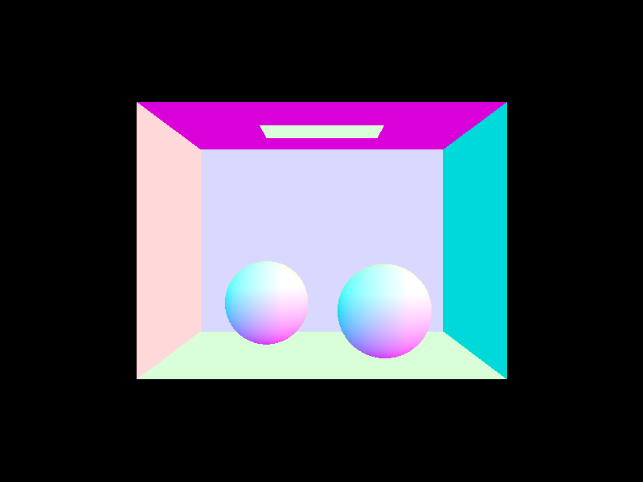
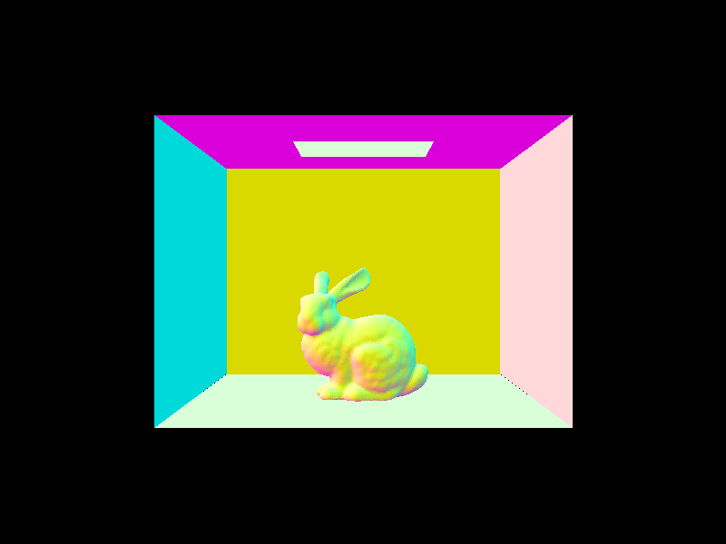
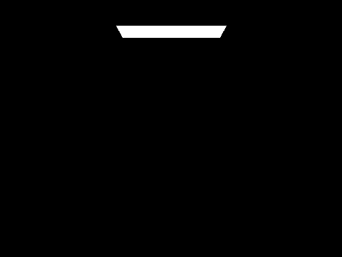
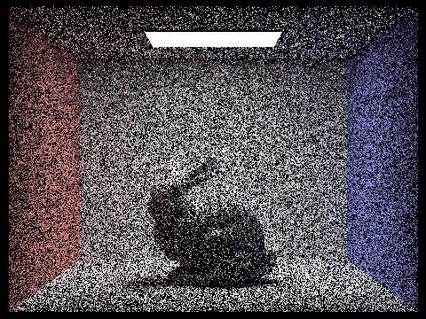
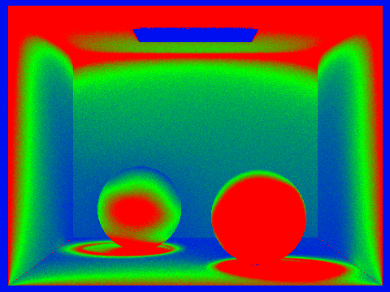

Overview
This project had us work with lighting and ray tracing, which is the systematic calculation of pixel values by generating a ray that simulates travel in a straight line until it is deflected by a material object. This, in theory, allows us to generate photorealistic computer generated imagery for animation usage. Though, due to the high volume of computation, this can take a while if not optimized. This project was split into five tasks. Task 1 was the ray and scene data structure implementation. Task 2 had us optimize bounding boxes, in which we came up with a tree hierarchy to drastically improve render time. Task 3 had us implement direct illumination, which includes light from the source and the first bounce on the scene. Task 4 had us implement global illumination, in which all bounces are considered up to a certain threshold. Finally, Task 5 had us implement adaptive sampling so we can reduce the number of samples we had to perform, thus optimizing runtime.
Part 1: Ray Generation and Scene Intersection (20 Points)
Walk through the ray generation and primitive intersection parts of the rendering pipeline.
In order to wrap our minds around how to render all rays, we considered an arbitrary ray and dealt with it accordingly. Our process was to mathematically understand the question, find the relevant slide, and then come up with a solution.
To implement Camera::generate_ray, needed to first calculate the camera coordinates, cam_x, cam_y, and cam_z. The spec gave us two points on the corners of the camera space.
|
|
|
As we are working with linear space, we were able to derive the following formula for converting cartesian points into points in the camera space.
We made a vector using these points, transformed it with the
c2w (camera to world space matrix), and generated the ray accordingly, bound by min_t and max_t.
For primitive intersection, we took random ray samples at each pixel and updated averaged them out before pushing them to the frame buffer. This is to simulate Monte Carlo integration, depicted in the equation below.
|
|
Explain the triangle intersection algorithm you implemented in your own words.
We referred heavily to Lecture 9 Slides 17-19 to understand and solve the triangle intersection problem.
First, to implement Triangle::has_intersection we needed to first determine whether the ray intersects with the plane containing the triangle. We considered the edge case that the ray is parllel to the plane, and returned false, as this step would cause a divide-by-zero error.
Then, we used the following equation to calculate t.
If t does not lie within the range [
min_t, max_t], we returned false because the ray intersects with the array out of the given range.
Moving on, we can assume the ray intersects with the plane at a valid t. We determined whether this intersection occurred within the triangle using Barycentric coordinates, and finally returned true if it did, and false if otherwise.
Show images with normal shading for a few small .dae files.
dae/meshedit/teapot.dae |

dae/keenan/banana.dae |

dae/sky/CBspheres.dae |

dae/sky/CBbunny.dae |
Part 2: Bounding Volume Hierarchy (20 Points)
Walk through your BVH construction algorithm. Explain the heuristic you chose for picking the splitting point.
Our BVH algorithm is a tree-recursive algorithm which splits the primitives list in half at each recursion. To do this, it rearranges the primitives
list and partitions the list with the start and end parameters of BVHNode *BVHAccel::construct_bvh function.
As for our heuristic, the function determines which axis, x, y, or z, to split the tree.
Specifically, it iterates through all the primitives in the recursion branch and compares their individual bounding boxes to the overall bounding box of the recursion branch.
The axis it determines is the axis that has the most even distribution of bounding box primitive centroid('s given axis) that are greater than (bin 1) or less than (bin 2) the recursion branch's overall centroid('s given axis).
Show images with normal shading for a few large .dae files that you can only render with BVH acceleration.
dae/sky/CBcoil.dae |
dae/meshedit/maxplanck.dae |
dae/sky/wall-e.dae |
dae/meshedit/peter.dae |
Compare rendering times on a few scenes with moderately complex geometries with and without BVH acceleration. Present your results in a one-paragraph analysis.
Before implementing the accelerated BVH, it was only feasible to run very simple geometries such as ../dae/meshedit/cow.dae or ../dae/keenan/banana.dae.
These functions took about a minute to render. After implementing the BVH accelerator, they are now almost instant. Moderately complex renders like dae/sky/wall-e.dae and dae/meshedit/peter.dae now only take about a second.
This makes sense, considering that before we were making redundant computations with primitives even when the rays had no chance of intersecting them.
Because the original BVH function considered all primitives for each possible intersection, and because the accelerated BVH utilizes a tree structure, it seems that the accelerated BVH asymptotically dominates the non-accelerated BVH structure.
It seems analogous to linear versus binary searching.
Part 3: Direct Illumination (20 Points)
Walk through both implementations of the direct lighting function.
We implemented two direct lighting functions, estimate_direct_lighting_hemisphere and estimate_direct_lighting_importance, both taking in a Ray object and an Intersection object, r and isect respectively. Which function is called is dependent on the boolean direct_hemisphere_sample. If it is true, then estimate_direct_lighting_hemisphere is called, else estimate_direct_lighting_importance is called.
direct_hemisphere_sample is the uniform hemisphere sampling function. To implement this function, we first defined probability density function, pdf, equal to the constant $\frac{1}{2\pi}$. We proceed to a for loop that iterates num_samples times as to take samples. In the loop, we first take a uniform hemisphere sample and set it to w_in. We set a new ray, hit_ray to represent the ray at origin $o =$ hit_p (the point of ray intersection) and its $d =$ o2w * w_in. This ray represents the reflected ray after intersection. We set its min_t to EPS_F to avoid self-intersection. In the final part of the for loop, we check if there is a BVH intersection between the hit_p ray and the w_in_world intersection. If there is, then we incremenet L_out by isect.bsdf->(w_out, w_in) * hit_isect.bsdf->get_emission() * dot(isect.n, w_in_world) / pdf, normalized by num_samples. This is to implement the equation $$\frac{1}{N} \sum_{j=1}^N \frac{f_r (p, \omega_j \to \omega_r) L_i (p, \omega_j) \cos \theta_j}{p(\omega_j)}$$ which itself is the Monte Carlo estimation of the recursive integral $$L_r (p, \omega_r) = \int_{H^2} f_r(p, \omega_i \to \omega_r) L_i (p, \omega_i) \cos \theta d \omega_i$$
estimate_direct_lighting_importance is the importance light sampling direct lighting function. This function includes two nested for loops. The outer loop iterates through each light taken from the list scene->lights. The outer loop samples from this light. Then, if $\cos \theta > \texttt{EPS_F} > 0$, we make a new ray hit_ray with origin $o =$ hit_p and direction $d =$ w_in. It sets this ray’s min_t to EPS_F and max_t to the distance to the light source minus EPS_F. Finally, it checks if there is a BVH intersection between hit_ray and hit_isect, and if there is not (to check if hit_p intersects a light source), then increments the ($\vec{0}$-initialized) output by isect.bsdf->f(w_out, w_in_object) * l_sample * w_in_object.z / pdf, normalized by num_samples. Notice that this comes from the same integral as the hemisphere sampling.
Show some images rendered with both implementations of the direct lighting function.
| Uniform Hemisphere Sampling | Light Sampling |
|---|---|
dae/sky/CBspheres.dae |

dae/sky/CBspheres.dae |
dae/sky/CBbunny.dae |
dae/sky/CBbunny.dae |
Focus on one particular scene with at least one area light and compare the noise levels in soft shadows when rendering with 1, 4, 16, and 64 light rays (the -l flag) and with 1 sample per pixel (the -s flag) using light sampling, not uniform hemisphere sampling.
dae/sky/CBspheres.dae) |
dae/sky/CBspheres.dae) |
dae/sky/CBspheres.dae) |
dae/sky/CBspheres.dae) |
Like before, the more samples we add, the clearer the render becomes. When it comes to the shadows, the lower sampled renders makes it apparent that the shadows are calculated by a shadow ray being cast from the sphere. In the higher resolution one, this looks more natural and convincing. Specifically on the shadows' borders, the lower resolution images show artificial dots while these are averaged out in the higher resolution renders.
Compare the results between uniform hemisphere sampling and lighting sampling in a one-paragraph analysis.
The uniform hemisphere sampling renders appear much more noisy than the importance sample renders. The importance sampling, on the other hand, is much more smooth and convincing, which makes sense because importance sampling's direct sample of lights is closer to physical reality than hemisphere sampling's uniform directions in a hemisphere. Also note that the hemisphere sampling renders are faster than the importance sampling because the importance sampling function has a for-loop nested inside another for-loop while hemisphere sampling only has one for-loop.
Part 4: Global Illumination (20 Points)
Walk through your implementation of the indirect lighting function.
The indirect lighting function we implemented, PathTracer::at_least_one_bounce_radiance, is a recursive function called on each ray and intersection that ends when either the ray has bounced max_ray_depth times or with a random termination probability of $30\%$ (Ray object, bounce_ray, and when there is an intersection it recurses.
When it recurses, it increments Vector3D L_out, initialized at $\vec{0}$, by BRDF(r, isect). If direct_hemisphere_sample is true, then BRDF is estimate_direct_lighting_hemisphere. Else, it is estiamte_direct_lighting_importance. The reason we do this incrementation is to take into ount the lighting emission of the current ray bounce. Note that, if isAccumBounces is false, then the program skips this step, because in this case we do not want to accumulate all light and we want the program to proceed until the base case before it starts considering the light emission.
Finally, regardless of isAccumBounces, we increment L_out by at_least_one_bounce_radiance(bounce_ray, bounce_isect) * sample * dot(isect.n, w_in_world) / pdf. We do this as to make the function recursive. In the isAccumBounces case, this is important because we want to accumulate light at
$$L _r(p, \omega_r) = \int_{H^2} f_r(p, \omega_i \to \omega_r) L_i(p, \omega_i) \cos \theta_i d\omega_i$$
Show some images rendered with global (direct and indirect) illumination. Use 1024 samples per pixel.
dae/sky/CBspheres_lambertian.dae |
dae/sky/CBbunny.dae |
Pick one scene and compare rendered views first with only direct illumination, then only indirect illumination. Use 1024 samples per pixel. (You will have to edit PathTracer::at_least_one_bounce_radiance(...) in your code to generate these views.)
dae/sky/CBbunny.dae |
dae/sky/CBbunny.dae |
Direct illumination is illumination from either the first bounce or the light source itself (zero bounce). The reason why my direct illumination's render
features a black roof is because the light source is attached to it and shines down, so it does not get any direct light. The bunny is monochrome instead of colored
because direct illumination does not take into account the colored light reflected by the walls.
Indirect illumination is illumination that is not direct; that is, it is illumination emanating from the second-bounce onwards, and not the first nor zero bounce.
The reason my indirect illumination's render features a black light is because the render does not consider the zero bounce light (light directly from the source).
Furthermore, it is non-reflective, so it gets no light and is thus black. Everything else is covered because of the reflection of the walls.
For CBbunny.dae, compare rendered views with max_ray_depth set to 0, 1, 2, 3, and 100 (the -m flag). Use 1024 samples per pixel.

isAccBounces=false |
isAccBounces=false |
isAccBounces=false |

isAccBounces=false |

isAccBounces=false |
isAccBounces=false |

isAccBounces=false |

isAccBounces=true |
isAccBounces=true |
isAccBounces=true |
isAccBounces=true |
isAccBounces=true |
isAccBounces=true |
isAccBounces=true |
In the case where isAccBounces is set to false, we get renders that get progressively darker as max_ray_depth increases. This makes sense because, in this case, only the light from the last bounce is being rendered, and each subsequent bounce of light gets progressively dimmer. In essence, this serves as a diagram for what each bounce of light looks like. The exception, of course, is when max_ray_depth is 0, in which only the light source is visible because the render is only showing the zero bounce light straight from the light source. Notice also that, in the render where max_ray_depth is 1, the bunny is monochrome because we are not considering the light bounced off the walls yet and the roof is completely black because no direct light is shone on it. Moreover, that in all case cases where max_ray_depth is greater than 0, the light source is black and does not show. This is because the light source is non-reflective and only emits zero bounce light. Lastly, notice that the image converges to complete darkness because each progressive bounce gets dimmer.
In the case where isAccBounces is true, each progressive incrementation of max_ray_depth yields a better with more convincing lighting. This is because all ray depths up to and including max_ray_depth are considered, which is a contrast with the other case. As you can see, each progressive iteration makes the bunny more colorful, and this is because more bounces of light are being considered from the colored walls. In this case the light source is always visibly white because the zero bounce light is always being considered. The images converge to a beautifully lit image.
Pick one scene and compare rendered views with various sample-per-pixel rates, including at least 1, 2, 4, 8, 16, 64, and 1024. Use 4 light rays.

dae/sky/CBspheres_lambertian.dae) |
dae/sky/CBspheres_lambertian.dae) |
dae/sky/CBspheres_lambertian.dae) |
dae/sky/CBspheres_lambertian.dae) |
dae/sky/CBspheres_lambertian.dae) |
dae/sky/CBspheres_lambertian.dae) |
dae/sky/CBspheres_lambertian.dae) |
Just like before, whenever I increase the number of samples, the image becomes more clear and convincing. This makes sense, as a lower sample rate means the render is working with less information. As you can see from my global illumination renders, the image is much more vibrant than the ones from Task 3's direct lighting renders. As you can see, the image converges to get rid of noise.
Part 5: Adaptive Sampling (20 Points)
Explain adaptive sampling. Walk through your implementation of the adaptive sampling.
Adaptive sampling is a sampling algorithm that adapts the number of samples for each pixel depending on the convergence state of the pixel. Once the convergence of the pixel reaches a certain threshold ( <= maxTolerance * mean, in this case) one can confidently say that the pixel has converged and that no further samples at that pixel are needed. This algorithm allows for an increase in the max amount of samples per pixeles since it specifically targets this amount of samples to pixels that need it to get rid of noise (those that take longer to converge), while stopping sampling for those that converged. Thus, allowing for rendering to be expedited when compared to code without the algorithm and the same number of samples per pixel.
Within the raytrace_pixel function we set up variables s1 and s2 before the for loop of the samples to track calculations for each sample. Then inside the for loop after the ray for the sample is created, we check if we have reached the samplePerBatch amount and if so we check the pixels convergence by calculating the mean and variance to use with the convergence formula. We then check the resulting convergence with the threshold we set and if it is in range we break the for loop. Also, we update the pixel and sampleCountBuffer with the appropriate index and number of samples and move on until the next pixel is called to be retraced.
Pick two scenes and render them with at least 2048 samples per pixel. Show a good sampling rate image with clearly visible differences in sampling rate over various regions and pixels. Include both your sample rate image, which shows your how your adaptive sampling changes depending on which part of the image you are rendering, and your noise-free rendered result. Use 1 sample per light and at least 5 for max ray depth.
dae/sky/CBbunny.dae at 2048 samples |
dae/sky/CBbunny.dae at 2048 samples (rate) |
dae/sky/CBbunny.dae at 1024 samples |
dae/sky/CBbunny.dae at 64 samples |
dae/sky/CBspheres_lambertian.dae at 2048 samples |

dae/sky/CBspheres_lambertian.dae at 2048 samples (rate) |
dae/sky/CBspheres_lambertian.dae at 1024 samples |
dae/sky/CBspheres_lambertian.dae at 64 samples |
As we increase the samples per pixel, the noise is being removed until we converge to a noise-free result. With adaptive sampling, we are able to do this much quicker. Note that we used $m = 5$.